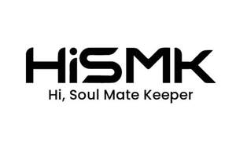

Trade Mark Journal No.2025/021 23 May 2025
UK00004200383 8 May 2025 (9,34,35,38,42)

- Class 9
- Downloadable computer software applications; downloadable application software for smartphones; data processing apparatus; quantity indicators; photocopiers [photographic, electrostatic, thermic]; light-emitting electronic pointers; network communication devices; loudspeakers; materials for electricity mains [wires, cables]; chips [integrated circuits]; alarm bells, electric; chargers for electronic cigarettes; battery chargers for electronic cigarettes; batteries for electronic cigarettes.
- Class 34
- Tobacco; devices for heating tobacco for the purpose of inhalation; matches; gas containers for cigar lighters; filter tips; flavourings, other than essential oils for use in electronic cigarettes; electronic cigarettes; liquid solutions for use in electronic cigarettes; electronic cigarettes for use as an alternative to traditional cigarettes; oral vaporizers for smokers; tobacco substitutes not for medical purposes; liquid nicotine solutions for use in electronic cigarettes; disposable oral vaporizers for smoking purposes sold filled with vegetable glycerin; cartridges sold filled with vegetable glycerin for electronic cigarettes; electronic cigarette mouthpieces; cases for electronic cigarettes and electronic cigarette accessories; electronic cigarettes and oral vaporizers for smokers; oral vaporizers for smoking purposes sold filled with vegetable glycerin; smokeless tobacco; cigarettes containing tobacco substitutes, not for medical purposes.
- Class 35
- Advertising, marketing and promotional services; promotion of goods and services for others; business management consultancy; organizing exhibitions for commercial or advertising purposes; marketing services; sales promotion for others; administration of loyalty programs involving discounts or incentives; online business networking services; import-export agency services; provision of an online marketplace for buyers and sellers of goods and services; rental of vending machines; arranging and conducting of auctions and reverse auctions via computer and telecommunication networks; business administration services for the processing of sales made on a global computer network.
- Class 38
- Telecommunications; chat room services for social networking; providing online chat rooms and electronic bulletin boards; providing on-line chat rooms for transmission of messages among computer users; providing chatrooms in virtual environments; providing online virtual reality-based forums for work collaboration; providing online forums; providing on-line chat rooms for social networking; providing on-line forums for transmission of messages among computer users; data transfer services; message transmission services; providing telecommunications connections to databases; transmission of database information via telecommunications networks; transmission of short messages [SMS], images, speech, sound, music and text communications between mobile telecommunications devices; transmission of news and current affairs information; transmission of news.
- Class 42
- Computer program updating services; computer program maintenance services development of computer programs; installation of computer programs; design of computer programs; modifying of computer programs; writing of computer programs; updating of computer programs; research relating to computer programs; electronic data storage and data back-up services; decoding of data; computer services for the analysis of data; Platform as a Service [PaaS]; platforms for artificial intelligence as software as a service [SaaS]; cloud computing services; conversion of images from physical to electronic media; electronic storage of digital video files; conversion of physical data and documents into electronic media format.
Shenzhen SKE Technology Co., Ltd.
Representative: Stobbs